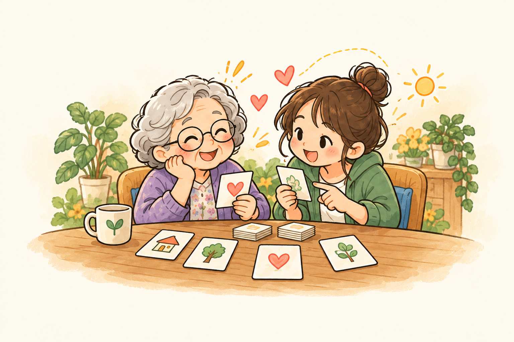

A
日常任務挑戰
自主遊玩・一起想辦法
在有限的能量下，安排交通、生活、購物與社交任務。面對症狀牌帶來的限制，運用支持牌尋找下一步。
- 從日常任務感受不同的處境
- 思考如何分配手上的資源
- 交流自己的選擇與感受
適合：朋友聚會、一般桌遊體驗

關於這場體驗
出門搭車、採買、與人聊天，都是我們熟悉的日常。在這副卡牌裡，你將帶著有限的能量完成生活任務，遇見不同的困難，也尋找能讓自己繼續前進的支持。
從「為什麼做不到？」到「我可以怎麼陪伴？」，我們希望讓理解從遊戲裡發生，讓討論延伸到生活中。
一副卡牌，兩種體驗
和朋友一起探索，也能在帶領者的引導下，開啟更深入的對話。
自主遊玩・一起想辦法
在有限的能量下，安排交通、生活、購物與社交任務。面對症狀牌帶來的限制，運用支持牌尋找下一步。
適合：朋友聚會、一般桌遊體驗
情境討論・練習回應
由帶領者搭配情境與引導指南，邀請玩家透過角色扮演，思考行為背後的感受，討論可以提供什麼支持。
適合：學校、社區與工作坊活動
先認識三張支持牌
卡牌連結遊戲中的選擇與日常情境。點擊卡牌，查看放大牌面與完整介紹。
把行程、地址或提醒寫下來，讓需要記住的事有一個可靠的落腳處。
理解提示：提示不是催促，而是一起把事情變得容易。把鑰匙、錢包等常用物品放在固定位置，降低尋找與重新判斷的負擔。
理解提示：熟悉的環境，能替記憶保留一點力氣。邀請熟悉的人一起完成任務，先理解需要，再提供剛好的協助。
理解提示：比起催促，先問一句「我可以陪你嗎？」以上為卡牌概念介紹；實際效果與數值請以正式遊戲說明書為準。
把理解帶回生活
從搭車、購物與聊天等日常，開始你的體驗。
面對卡牌中的限制，思考可以運用的支持。
聊聊遊戲中的困難，以及你希望得到的回應。
邀請身邊的人，從一張卡牌、一段對話，
一起練習多一點耐心、多一點陪伴。
按住卡片並左右拖動，看看反光變化